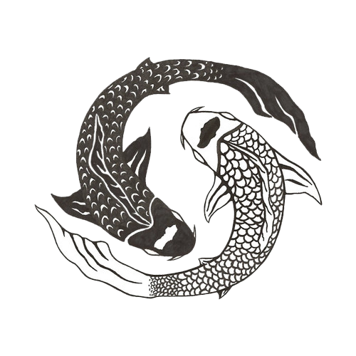

The Tao

Darkness within darkness.
The gateway to all understanding.
The gateway to all understanding.
The book of Tao is one of the 5 books of wisdom from china.
Those include:
- The Tao de Ching - the book of Philosophy
- The I Ching - the book of Changes
- The Shu Jing - the book of History
- The Shi Jing - the book of Poetry
- The Liji - the book of Rites
- The book of song - lost to time